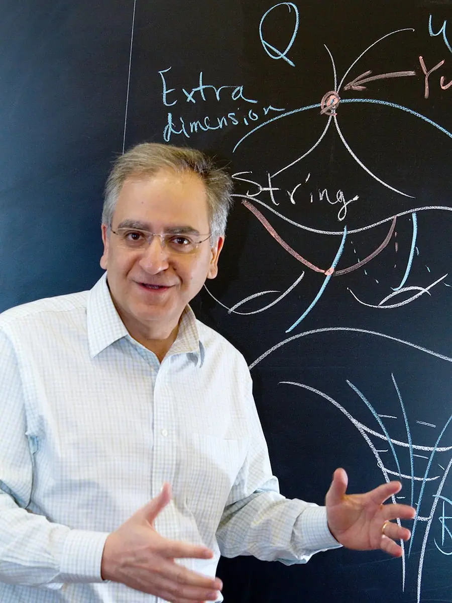

Articles ·
Dark Energy May Be Incompatible With String Theory
String theory permits a “landscape” of possible universes, surrounded by a “swampland” of logically inconsistent universes. In all of the simple, viable stringy universes physicists have studied, the density of dark energy is either diminishing or has a stable negative value, unlike our universe, which appears to have a stable positive value.
June 25, Timm Wrase awoke in Vienna and groggily scrolled through an online repository of newly posted physics papers. One title startled him into full consciousness.
The paper, by the prominent string theorist Cumrun Vafa of Harvard University and collaborators, conjectured a simple formula dictating which kinds of universes are allowed to exist and which are forbidden, according to string theory. The leading candidate for a “theory of everything” weaving the force of gravity together with quantum physics, string theory defines all matter and forces as vibrations of tiny strands of energy. The theory permits some 10500 different solutions: a vast, varied “landscape” of possible universes. String theorists like Wrase and Vafa have strived for years to place our particular universe somewhere in this landscape of possibilities.
But now, Vafa and his colleagues were conjecturing that in the string landscape, universes like ours — or what ours is thought to be like — don’t exist. If the conjecture is correct, Wrase and other string theorists immediately realized, the cosmos must either be profoundly different than previously supposed or string theory must be wrong.
After dropping his kindergartner off that morning, Wrase went to work at the Vienna University of Technology, where his colleagues were also buzzing about the paper. That same day, in Okinawa, Japan, Vafa presented the conjecture at the Strings 2018 conference, which was streamed by physicists worldwide. Debate broke out on- and off-site. “There were people who immediately said, ‘This has to be wrong,’ other people who said, ‘Oh, I’ve been saying this for years,’ and everything in the middle,” Wrase said. There was confusion, he added, but “also, of course, huge excitement. Because if this conjecture was right, then it has a lot of tremendous implications for cosmology.”
Researchers have set to work trying to test the conjecture and explore its implications. Wrase has already written two papers, including one that may lead to a refinement of the conjecture, and both mostly while on vacation with his family. He recalled thinking, “This is so exciting. I have to work and study that further.”
The conjectured formula — posed in the June 25 paper by Vafa, Georges Obied, Hirosi Ooguri and Lev Spodyneiko and further explored in a second paper released two days later by Vafa, Obied, Prateek Agrawal and Paul Steinhardt — says, simply, that as the universe expands, the density of energy in the vacuum of empty space must decrease faster than a certain rate. The rule appears to be true in all simple string theory-based models of universes. But it violates two widespread beliefs about the actual universe: It deems impossible both the accepted picture of the universe’s present-day expansion and the leading model of its explosive birth.
Dark Energy in Question
Since 1998, telescope observations have indicated that the cosmos is expanding ever-so-slightly faster all the time, implying that the vacuum of empty space must be infused with a dose of gravitationally repulsive “dark energy.”
In addition, it looks like the amount of dark energy infused in empty space stays constant over time (as best anyone can tell).
But the new conjecture asserts that the vacuum energy of the universe must be decreasing.

Hayward Photography
Vafa and colleagues contend that universes with stable, constant, positive amounts of vacuum energy, known as “de Sitter universes,” aren’t possible. String theorists have struggled mightily since dark energy’s 1998 discovery to construct convincing stringy models of stable de Sitter universes. But if Vafa is right, such efforts are bound to sink in logical inconsistency; de Sitter universes lie not in the landscape, but in the “swampland.” “The things that look consistent but ultimately are not consistent, I call them swampland,” he explained recently. “They almost look like landscape; you can be fooled by them. You think you should be able to construct them, but you cannot.”
According to this “de Sitter swampland conjecture,” in all possible, logical universes, the vacuum energy must either be dropping, its value like a ball rolling down a hill, or it must have obtained a stable negative value. (So-called “anti-de Sitter” universes, with stable, negative doses of vacuum energy, are easily constructed in string theory.)
The conjecture, if true, would mean the density of dark energy in our universe cannot be constant, but must instead take a form called “quintessence” — an energy source that will gradually diminish over tens of billions of years. Several telescope experiments are underway now to more precisely probe whether the universe is expanding with a constant rate of acceleration, which would mean that as new space is created, a proportionate amount of new dark energy arises with it, or whether the cosmic acceleration is gradually changing, as in quintessence models. A discovery of quintessence would revolutionize fundamental physics and cosmology, including rewriting the cosmos’s history and future. Instead of tearing apart in a Big Rip, a quintessent universe would gradually decelerate, and in most models, would eventually stop expanding and contract in either a Big Crunch or Big Bounce.
Paul Steinhardt, a cosmologist at Princeton University and one of Vafa’s co-authors, said that over the next few years, “all eyes should be on” measurements by the Dark Energy Survey, WFIRST and Euclid telescopes of whether the density of dark energy is changing. “If you find it’s not consistent with quintessence,
” Steinhardt said, “it means either the swampland idea is wrong, or string theory is wrong, or both are wrong or — something’s wrong.”
Inflation Under Siege
No less dramatically, the new swampland conjecture also casts doubt on the widely believed story of the universe’s birth: the Big Bang theory known as cosmic inflation. According to this theory, a minuscule, energy-infused speck of space-time rapidly inflated to form the macroscopic universe we inhabit. The theory was devised to explain, in part, how the universe got so huge, smooth and flat.
Maybe string theory doesn’t describe the world. [Maybe] dark energy has falsified it.
Matthew Kleban
But the hypothetical “inflaton field” of energy that supposedly drove cosmic inflation doesn’t sit well with Vafa’s formula. To abide by the formula, the inflaton field’s energy would probably have needed to diminish too quickly to form a smooth- and flat-enough universe, he and other researchers explained. Thus, the conjecture disfavors many popular models of cosmic inflation. In the coming years, telescopes such as the Simons Observatory will look for definitive signatures of cosmic inflation, testing it against rival ideas.
In the meantime, string theorists, who normally form a united front, will disagree about the conjecture. Eva Silverstein, a physics professor at Stanford University and a leader in the effort to construct string-theoretic models of inflation, thinks it is very likely to be false. So does her husband, the Stanford professor Shamit Kachru; he is the first “K” in KKLT, a famous 2003 paper (known by its authors’ initials) that suggested a set of stringy ingredients that might be used to construct de Sitter universes. Vafa’s formula says both Silverstein’s and Kachru’s constructions won’t work. “We’re besieged by these conjectures in our family,” Silverstein joked. But in her view, accelerating-expansion models are no more disfavored now, in light of the new papers, than before. “They essentially just speculate that those things don’t exist, citing very limited and in some cases highly dubious analyses,” she said.
Matthew Kleban, a string theorist and cosmologist at New York University, also works on stringy models of inflation. He stresses that the new swampland conjecture is highly speculative and an example of “lamppost reasoning,” since much of the string landscape has yet to be explored. And yet he acknowledges that, based on existing evidence, the conjecture could well be true. “It could be true about string theory, and then maybe string theory doesn’t describe the world,” Kleban said. “[Maybe] dark energy has falsified it. That obviously would be very interesting.”
Mapping the Swampland
Whether the de Sitter swampland conjecture and future experiments really have the power to falsify string theory remains to be seen. The discovery in the early 2000s that string theory has something like 10500 solutions killed the dream that it might uniquely and inevitably predict the properties of our one universe. The theory seemed like it could support almost any observations and became very difficult to experimentally test or disprove.
In 2005, Vafa and a network of collaborators began to think about how to pare the possibilities down by mapping out fundamental features of nature that absolutely have to be true. For example, their “weak gravity conjecture” asserts that gravity must always be the weakest force in any logical universe. Imagined universes that don’t satisfy such requirements get tossed from the landscape into the swampland. Many of these swampland conjectures have held up famously against attack, and some are now “on a very solid theoretical footing,” said Hirosi Ooguri, a theoretical physicist at the California Institute of Technology and one of Vafa’s first swampland collaborators. The weak gravity conjecture, for instance, has accumulated so much evidencethat it’s now suspected to hold generally, independent of whether string theory is the correct theory of quantum gravity.
The intuition about where landscape ends and swampland begins derives from decades of effort to construct stringy models of universes. The chief challenge of that project has been that string theory predicts the existence of 10 space-time dimensions — far more than are apparent in our 4-D universe. String theorists posit that the six extra spatial dimensions must be small — curled up tightly at every point. The landscape springs from all the different ways of configuring these extra dimensions. But although the possibilities are enormous, researchers like Vafa have found that general principles emerge. For instance, the curled-up dimensions typically want to gravitationally contract inward, whereas fields like electromagnetic fields tend to push everything apart. And in simple, stable configurations, these effects balance out by having negative vacuum energy, producing anti-de Sitter universes. Turning the vacuum energy positive is hard. “Usually in physics, we have simple examples of general phenomena,” Vafa said. “De Sitter is not such a thing.”
The KKLT paper, by Kachru, Renata Kallosh, Andrei Linde and Sandip Trivedi, suggested stringy trappings like “fluxes,” “instantons” and “anti-D-branes” that could potentially serve as tools for configuring a positive, constant vacuum energy. However, these constructions are complicated, and over the years possible instabilities have been identified. Though Kachru said he does not have “any serious doubts,” many researchers have come to suspect the KKLT scenario does not produce stable de Sitter universes after all.
Vafa thinks a concerted search for definitely stable de Sitter universe models is long overdue. His conjecture is, above all, intended to press the issue. In his view, string theorists have not felt sufficiently motivated to figure out whether string theory really is capable of describing our world, instead taking the attitude that because the string landscape is huge, there must be a place in it for us, even if no one knows where. “The bulk of the community in string theory still sides on the side of de Sitter constructions [existing],” he said, “because the belief is, ‘Look, we live in a de Sitter universe with positive energy; therefore we better have examples of that type.’”
His conjecture has roused the community to action, with researchers like Wrase looking for stable de Sitter counterexamples, while others toy with little-explored stringy models of quintessent universes. “I would be equally interested to know if the conjecture is true or false,” Vafa said. “Raising the question is what we should be doing. And finding evidence for or against it — that’s how we make progress.”
This article was reprinted on TheAtlantic.com and Spektrum.de.